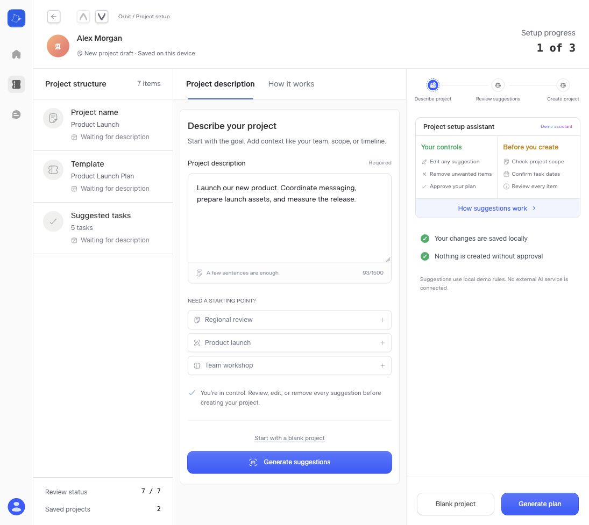
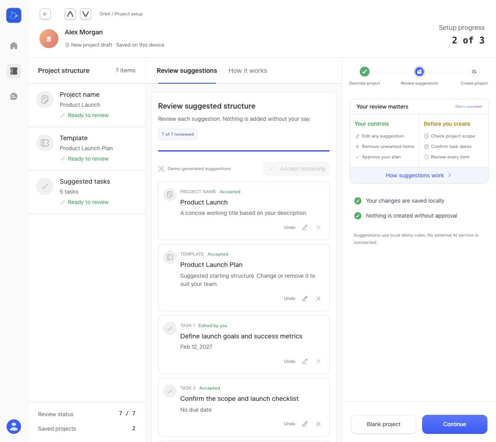
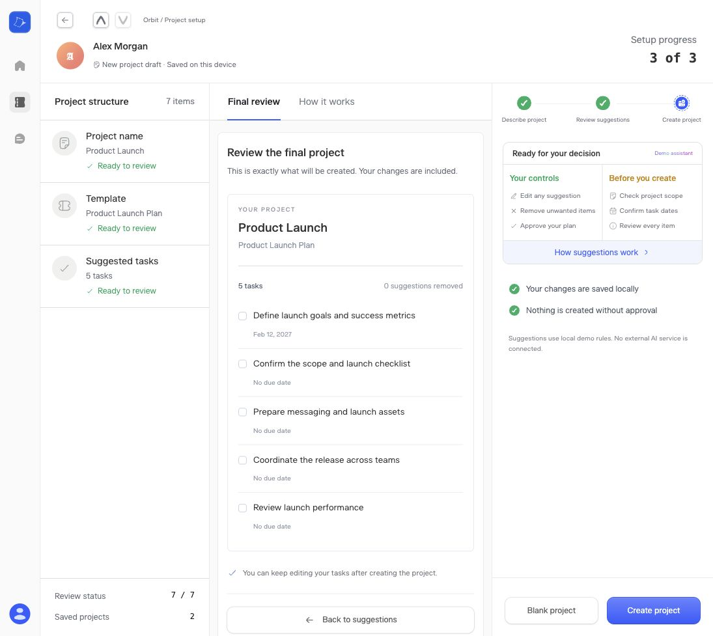
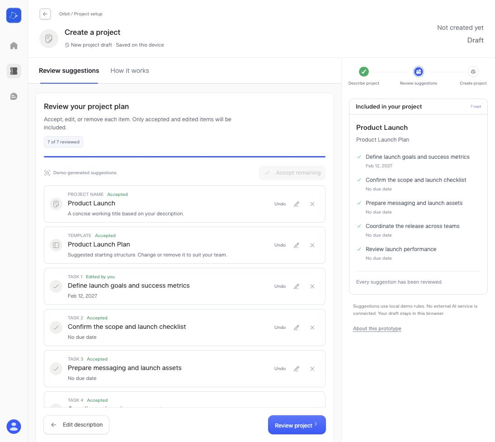

The literal three-panel verification layout fragmented a sequential project-creation task. The useful visual language can stay; duplicated information and actions should go.
The original screen shows two primary actions (Generate suggestions and Generate plan), repeats blank-project entry, and gives a person’s identity more prominence than the project. Returning to the brief also displays stale plan items alongside “Waiting for description.”

The narrow central column uses tall cards, leaving only part of the seven-item plan visible. Project details repeat on the left while the right panel mostly repeats instructions. The primary action competes with another Continue control elsewhere.
Strengths: individual edit/remove/restore controls and explicit review states give useful control. Risks: small low-contrast icon buttons need keyboard and contrast testing; visual inspection alone cannot establish accessibility compliance.

The final plan is visible and creation remains explicit. Two Create project buttons create unnecessary competition, and the narrow column forces long task content to wrap. The side panels contribute little new information at this point.


Checked that removing a task removes it from the live preview, restoring it blocks continuation until reviewed, and final confirmation exposes one Create project action. Existing edited content and dates survive returning to the brief. The revised layout has no horizontal overflow at a 390px viewport. TypeScript and production build pass.
These checks establish the corrected interaction behavior, not usability validation with participants or full accessibility compliance. AI output remains local demo logic, with no external model or backend.